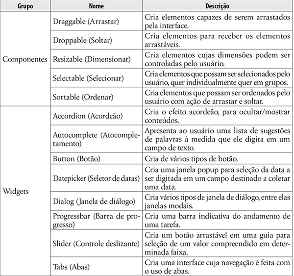
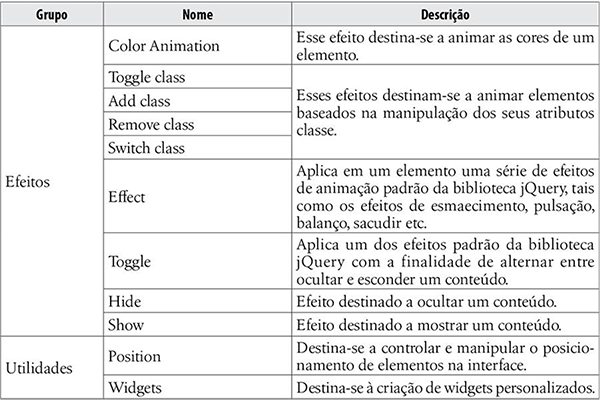
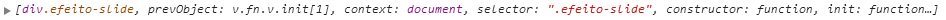

Douglas Julião Marques
Sumário
Componentes
DOM
Document Object Model
Criado pelo W3C O DOM é uma multi-plataforma que representa como as marcações em HTML, XHTML e XML são organizadas e lidas pelo navegador que você usa.
Uma arvore API – que é o que fazemos quando usamos programas ou scripts para alterar funcionalidades de uma página: conteudo, estrutura ou folha de estilo.
Basicamento o DOM é toda uma estrutura formada pelo html veja uma demonstração.

Ferramentas Utilizadas

Obrigado! :)
Perguntas?